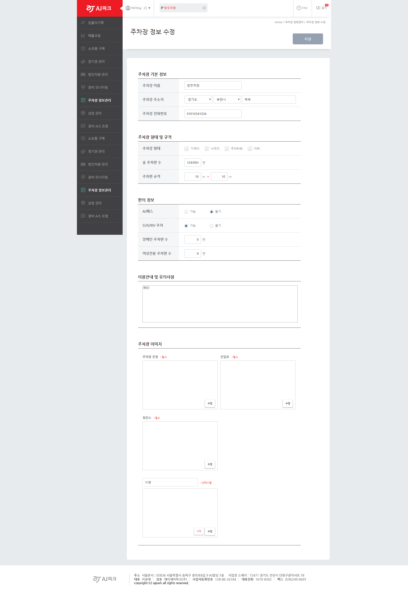
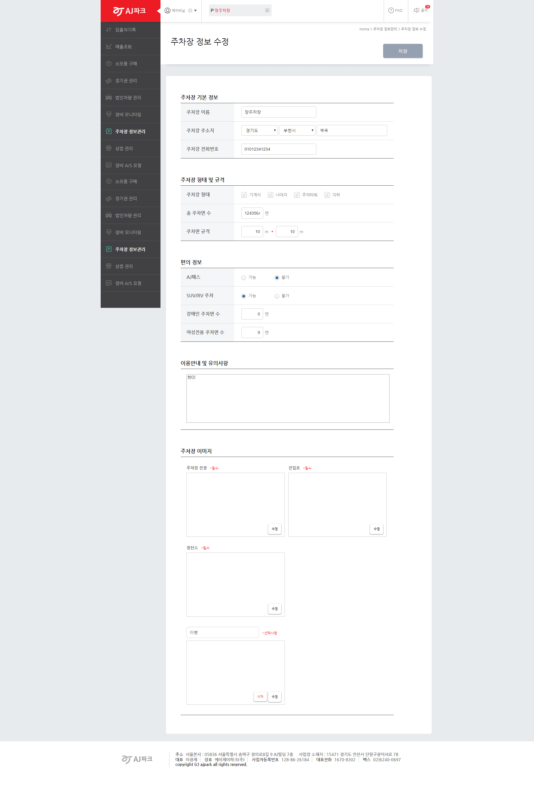
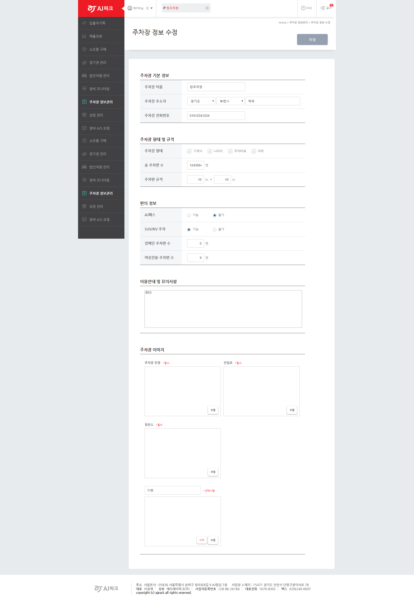

AJ park partnwe web 프로젝트를 진행하였다. AJ park에서 제휴 주차장 및 상점에서 사용하는 관리자웹이다. 나중에 JSP로 변환하였긴하지만 html5와 css3 하드코딩으로 작업되었다. css를 어느정도 모듈화시켜서 만든 웹이다. 전체적인 UI와 가이드라인을 받고 작업한게아니라 디자인팀에서 페이지를 그려줄때마다 퍼블리싱을하였기때문에 사용된 모든 css가 모듈화가 되어있지는 않았지만, 전체적인 레이아웃은 모두 모듈화시켰다.

오히려 내부 css들이 쪼개져있었기때문에 추후에 클라이언트가 다시 수정을 요청하였을때 적극 반영할 수 있었다. 모듈화의 선을 정할 수 있었던 나쁘지않은 작업이었다.